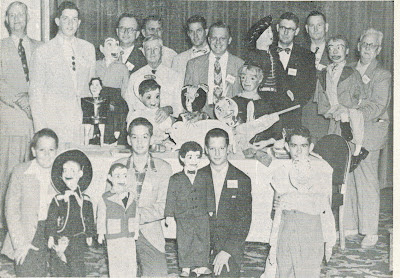

Vintage 1953 THE ORACLE
3/2/2012
28 pages of fascinating material! I've listed titles and authors of all articles on my eBay listing for this newsletter. Here is the listing link followed by a copy of several items from this issue.
http://cgi.ebay.com/ws/eBayISAPI.dll?ViewItem&item=290678463245
{kind=link}
http://cgi.ebay.com/ws/eBayISAPI.dll?ViewItem&item=290678463245
{kind=link}
This ad by figure maker John Carroll featured Vicky Taylor and her figure, Ronnie Lee, which I assume was a Carroll creation.
{kind=link}
Do you recognize this teen ager? Yes, Jerry Layne with "Lester O'Reilly" (a Turner figure). Jerry had appeared on Paul Winchell's "Best Kid Vent" contest and judged by Paul Winchell and Jerry Mahoney as fourth best kid vent in New York, sixth ranking in the US. (Jerry Was "Tenn Vent of the Month" in this issue of The ORACLE.)
 |
| First Ventriloquist Session at the 1953 Texas Association of Magician's Conclave. First row L-R: Bob Warden, Donald Smith, Byron Boothe, Fred Olson. Second row from left: Mr. Zuko (Logan Pritchett), Joe Donnelly Jr., N. B. Ausburn, Chester LeRoy, Frank Clauder, Great Chesterfield. Back row from left: Joe Barnes, Phil Tilden, Nick Hill. |
{kind=link}